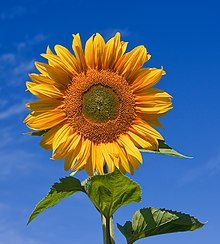

Rose (Rosa rubiginosa).

Name the flower that
has bright yellow petals, blows away in the wind
,and is considered a weed by many gardeners.
Dandelion (Taraxacum officinale).
Name the flower that
releases a sweet smell and has layered petals.
Rose (Rosa rubiginosa).
Name the flower that
grows fire colored flowers and is most popularly known as "butterfly weed."
Milkweed (Asclepias curassavica).

Name the flower that
has delicate white petals and a sunny yellow middle.
Daisy (Bellis perennis).

Name the flower that
basks in the sun's glory.
Sunflower(Helianthus annuus).
